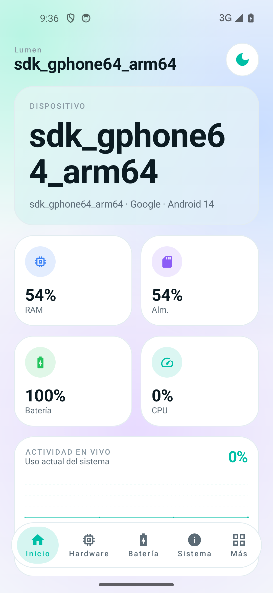
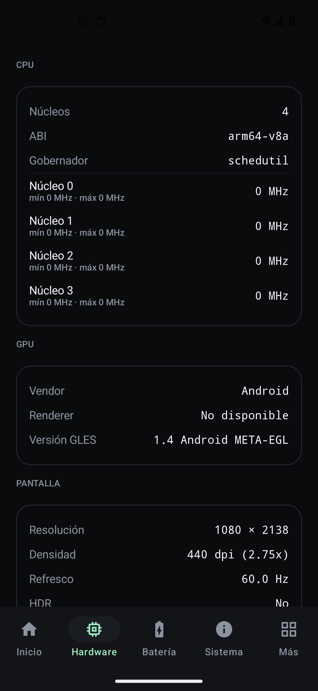
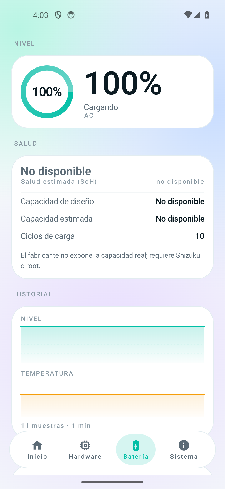
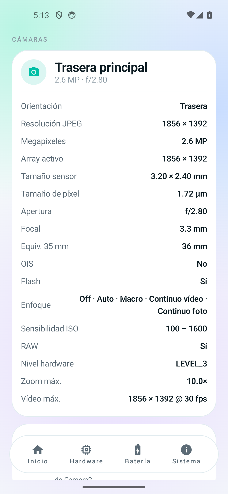

Hardware completo
SoC, núcleos y frecuencias, GPU, pantalla, memoria, almacenamiento y cámaras con detalle por lente.
App Android · v1.3.0
Hardware, batería, cámaras, eSIM, red, sensores y benchmarks en una sola app. Sin anuncios, sin cuentas y sin enviar nada a ningún servidor.
Esta página solo presenta la app. Los datos del dispositivo los lee Lumen en tu móvil, no el navegador.

01 Qué hace
Las mismas categorías que una app de sistema, con una interfaz que deja respirar a los datos.
SoC, núcleos y frecuencias, GPU, pantalla, memoria, almacenamiento y cámaras con detalle por lente.
Nivel en vivo, salud estimada, capacidad, ciclos e historial que sobrevive al reinicio.
Compatibilidad eUICC, ranuras y SIMs activas. Sin prometer lo que Android no permite leer.
Transporte, operador, IPs, DNS, MTU y señal, en una sola tarjeta legible.
Acelerómetro, giroscopio, luz, proximidad y el resto, con valores que se mueven de verdad.
Busca, filtra y consulta versión, targetSdk y tamaño del APK, con sus iconos reales.
CPU de un hilo y multihilo, memoria y almacenamiento, con puntuación e historial local.
Sin anuncios, sin cuentas y sin telemetría. No hay una sola llamada de red.
02 Capturas
Oscuro por defecto, un solo acento menta y valores en monoespaciada. También hay tema claro.



03 Instalar
El APK está firmado en modo depuración. Es normal que Android pida permiso para instalar apps de fuera de la tienda.
Descargar APK · v1.3.0Ábrelo desde el móvil. Si usas Telegram o el navegador, aparecerá en Descargas.
Ajustes → Instalar apps desconocidas → elige el navegador o el gestor de archivos.
No hay registro, ni cuenta, ni sincronización. Los permisos se piden solo cuando hacen falta.
04 Sin humo
charge_full, Lumen muestra «No disponible» en lugar de inventar un porcentaje; con Shizuku o root sí se puede leer.05 Dudas
No. Toda la información básica se lee con las APIs públicas de Android. Root o Shizuku solo amplían datos que el fabricante bloquea, como la salud real de la batería.
No. No hay analítica, ni cuentas, ni publicidad, ni peticiones de red. Todo se queda en el teléfono.
Está firmado con la clave de desarrollo para poder instalarlo sin publicarlo en Google Play. Para la tienda haría falta una firma de release y justificar el permiso de lista de apps.
Requiere Android 8.0 o superior. Cuanto más reciente sea el sistema, más datos expone; en equipos antiguos algunas tarjetas dirán «No disponible».
No. Esta web es la página de presentación. Un navegador no puede acceder al hardware como una app nativa, así que aquí no simulamos datos: solo contamos qué hace Lumen.
Sí. La app no necesita internet para nada.
Lumen incluye la lista oficial de dispositivos de Google (~64.000 modelos) dentro de la app. Busca el código real del teléfono, como V2454A, y muestra su nombre comercial: vivo X200 Ultra. No hace ninguna consulta a internet.
Listo para mirar dentro
Android 8.0+ · 16 MB · Sin anuncios · MIT